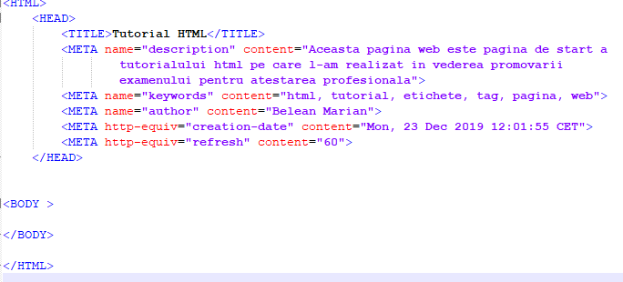

Documentarea paginii web
In sectiunea de antet a paginii web (sectiunea HEAD /HEAD) pot fi precizate o multime de
informatii care nu vor fi vizibile in pagina web dar care vor fi folosite de serverul pe care va
fi stocata pagina web. Ele se numesc METAINFORMATII
Orice metainformatie va fi precizata in interiorul unei etichete META care este singulara,
neavand perechea de sfarsit de metainformatie (/META).
Metainformatiile pot cuprinde descrierea paginii web, cuvintele cheie pe baza carora pagina va fi
gasita de motoarele de cautare, drepturile de autor, data crearii si reactualizarii, etc.
1)Descrierea paginii web
Pentru a descrie pagina web si a face cunoscut scopul pentru care a fost ea realizata se utilizeaza
eticheta META cu doua atribute:
name="description" -stabileste faptul ca urmeaza descrierea paginii web
content="sir de caractere" -are ca valoare descrierea paginii web
Iata un exemplu de descriere a paginii web:

2)Precizarea cuvintelor cheie pentru o pagina web
Daca pagina web nu ar avea anumite cuvinte cheie ea ar fi "invizibila" pentru motoarele de cautare.
Pentru a specifica cuvintele cheie ale unei pagini web se foloseste eticheta META cu aceleasi doua
atribute: name (configurat la valoarea "keywords") si content (care are ca valoare
sirul de cuvinte cheie propuse de autorul paginii).
Iata mai jos un exemplu de pagina web cu cuvinte-cheie pentru motoarele de cautare:

In exemplul de mai sus este de inteles ca daca un utilizator introduce unul dintre cele 6 cuvinte
cheie in campul de cautare al unui motor, printre rezultatele gasite va figura si aceasta pagina web.
3)Precizarea drepturilor de autor
Pentru specificarea autorului paginii web se utilizeaza eticheta META in care atributul name
este setat la valoarea "author" iar atributul content va avea drept valoare numele
autorului paginii web.
Un exemplu:
4)Data crearii paginii web
Pentru a furniza serverelor data crearii paginii web se foloseste eticheta META cu atributele
http-equiv setat la valoarea "creation-date" si atributul content
avand ca valoare data si ora crearii paginii web.
Formatul pentru specificarea datei si orei este:
zzz, zz lll aaaa hh:mm:ss, ttt
unde :
zzz este una din zile (Mon, Tue, Wed, Thu, Fri,Sat sau Sun)
zz este numarul zilei din luna (01, 02, 03,....., 27,...)
lll este luna (Jan,Feb, Mar,Apr, May, Jun, Jul, Aug, Sep, Oct, Nov, Dec)
aaaa este anul (ex. 2009)
hh:mm:ss reprezinta ora, minutele si secundele
ttt reprezinta standardul de timp utilizat (ex. GMT, CET, etc....)
Iata un exemplu de setare a datei si orei realizarii paginii web:
5)Reactualizarea automata a paginii web
Sunt site-uri care in mod necesar trebuie sa se reactualizeze automat la diferite intervale de timp.
Este de inteles ca evolutia cotarilor la bursa sau rezultatele diferielor meciuri trebuiesc
reactualizate la intervale de timp relativ scurte in vederea informarii corecte in timp util a
utilizatorilor. Pentru aceasta se utilizeaza eticheta META cu atributul http-equiv
setat la valoarea "refresh" iar cu atributul content avand ca valoare numarul de secunde
dupa care pagina se va reactualiza.
Mai jos poate fi vazut un cod care reactualizeaza pagina web la fiecare 60 secunde:
